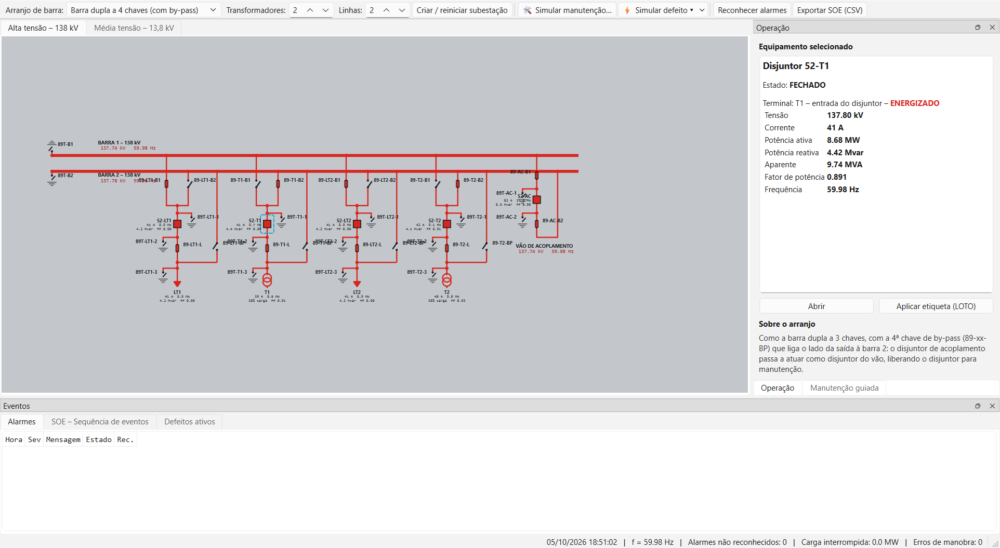
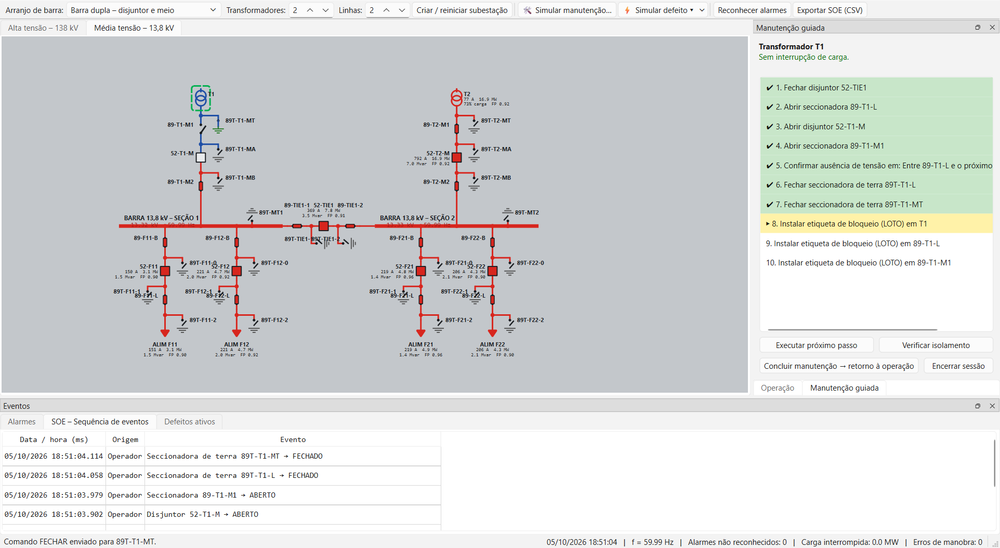
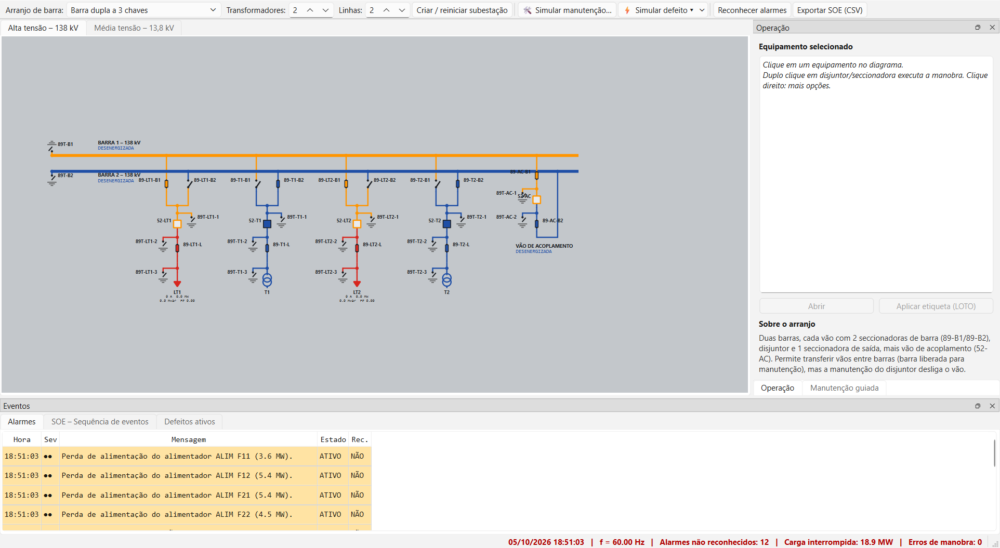
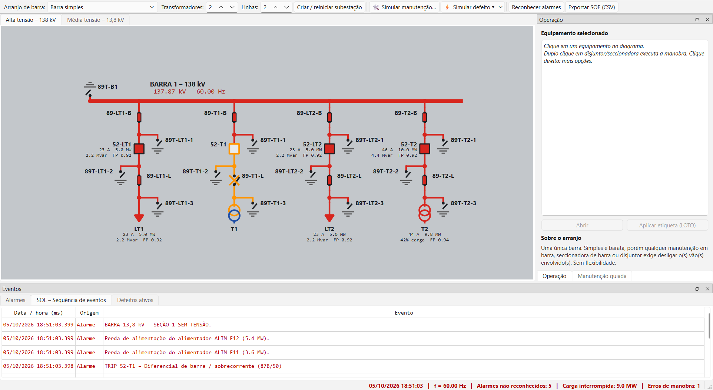
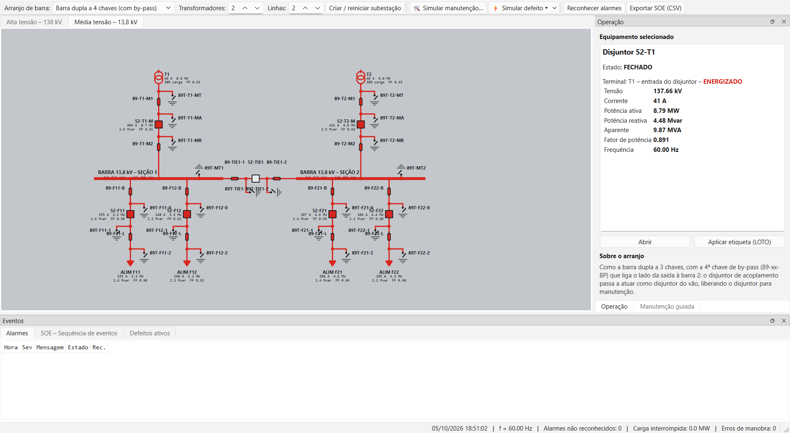
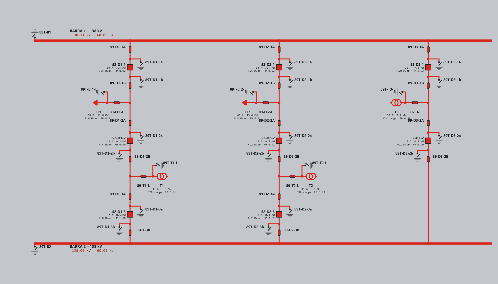

Treine manobras de subestação em um painel no estilo ISA: barra viva em vermelho, barra morta em azul. Escolha o arranjo, coloque um equipamento em manutenção e faça (ou deixe o simulador guiar) o procedimento correto. Gratuito.
Baixar para WindowsSimuladorSCADA.exe · ~58 MB · sem instalaçãoO executável não é assinado digitalmente. Se o Windows SmartScreen avisar, clique em Mais informações → Executar assim mesmo. O código-fonte está no repositório e você pode compilar o seu próprio exe.
Simples e econômica. Qualquer manutenção em barra ou disjuntor desliga os vãos envolvidos.
O disjuntor de transferência substitui o de qualquer vão pelo by-pass.
Duas chaves de barra, disjuntor, chave de saída e vão de acoplamento.
Acrescenta a chave de by-pass, liberando o disjuntor com o acoplamento.
Três disjuntores por diâmetro e dois circuitos derivados entre eles.
De 1 a 4 transformadores e de 1 a 3 linhas, com lado de média tensão (13,8 kV) completo.
Abrir seccionadora em carga ou fechar sobre circuito aterrado gera arco, dano ao equipamento e atuação da proteção.
O simulador calcula o procedimento (transferência de carga, abertura, aterramento e etiquetas) e acompanha cada passo. No modo livre, você faz e ele verifica o isolamento.
Seccionadoras de terra, confirmação de ausência de tensão e etiquetas de bloqueio.
Curto em barra, falha de transformador, perda de linha, disjuntor travado e sobrecarga, com reparo por equipe de campo.
Lista de alarmes com reconhecimento e sequência de eventos com data e hora em milissegundos, exportável em CSV.
Tensão, frequência, corrente, potências e fator de potência nas barras energizadas.






Ferramenta didática. Os cálculos elétricos são simplificados e os procedimentos gerados não substituem as normas e instruções de operação da sua empresa.